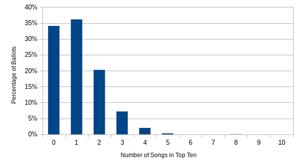
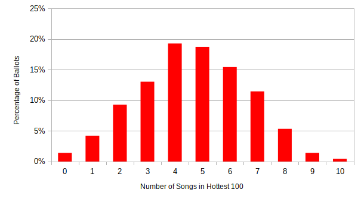

If I wasn’t me, I can be sure I'd wanna be
Triple J prides itself on having a diverse listener base. It’s specialist programmes cover genres such as metal, hip-hop, roots and blues, punk, and EDM. But is this self-image true? Yesterday we tried to see if people literally voted the same, but the vast number of possible combinations made this too unlikely. So let us turn to a different metric to measure conformity.
If JJJers actually have a narrow taste, then we should expect there to be a majority of people who vote from a narrow pool of songs. As a result, those people would have a high number of picks from the top ten. If JJJers have diverse tastes, then most people won’t be picking a lot of songs high on the countdown.
I don’t actually know which songs will be in the top ten, but let’s assume that top ten songs from my sample of votes are correct. For each ballot I counted how many songs in the top ten that person voted for. I found that 34% of people did not vote for any top ten songs. 90% of people voted for 2 or fewer top ten songs. So it seems true that the triple J audience has wide interests.

We can broaden this too. The median voter only picked 5 songs that will make the Hottest 100. Just 10 people out of my 2339 person sample (0.4%) will have all their picks played on Saturday. It seems that everyone has their favourite obscure song.
